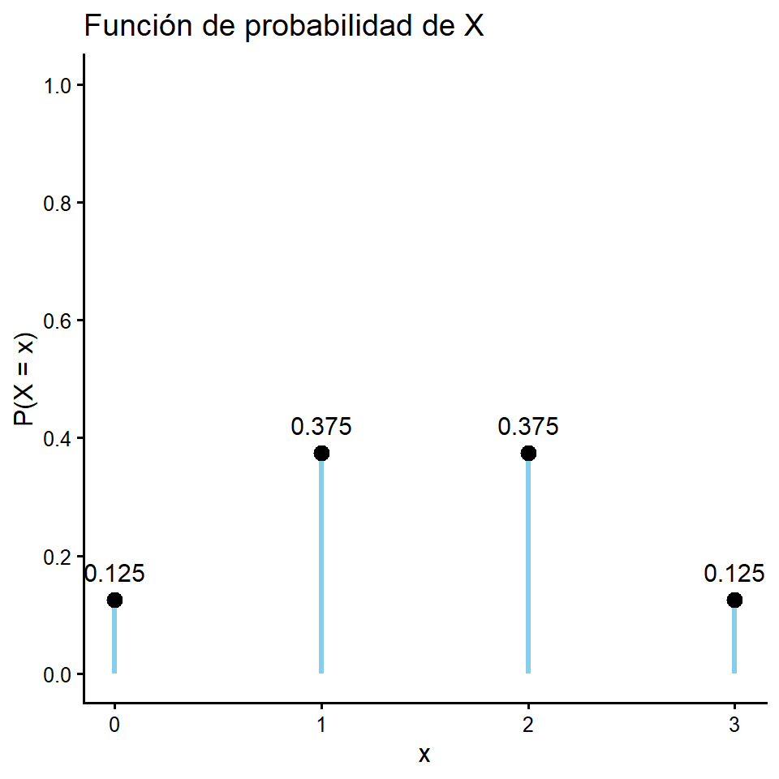
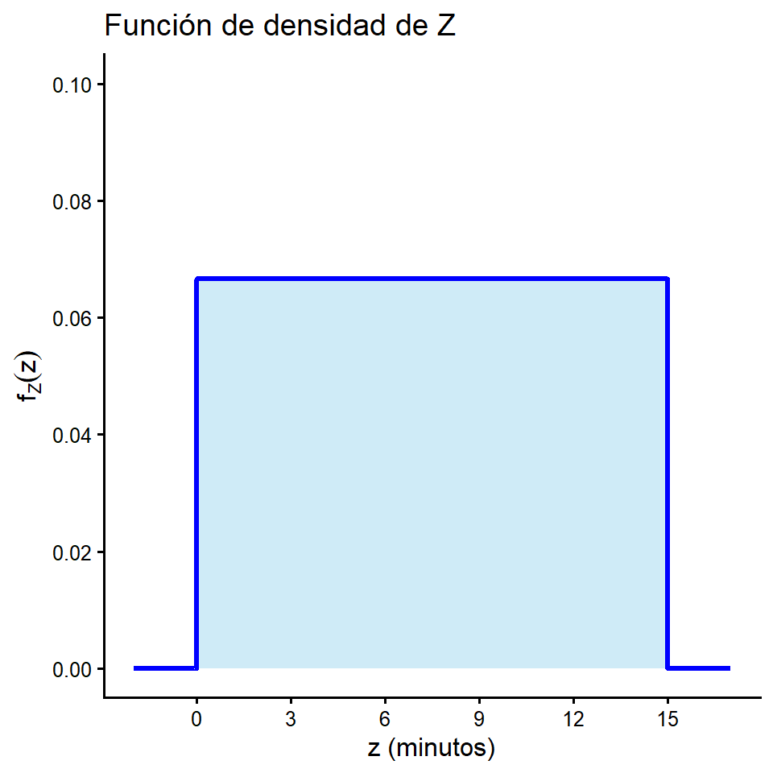
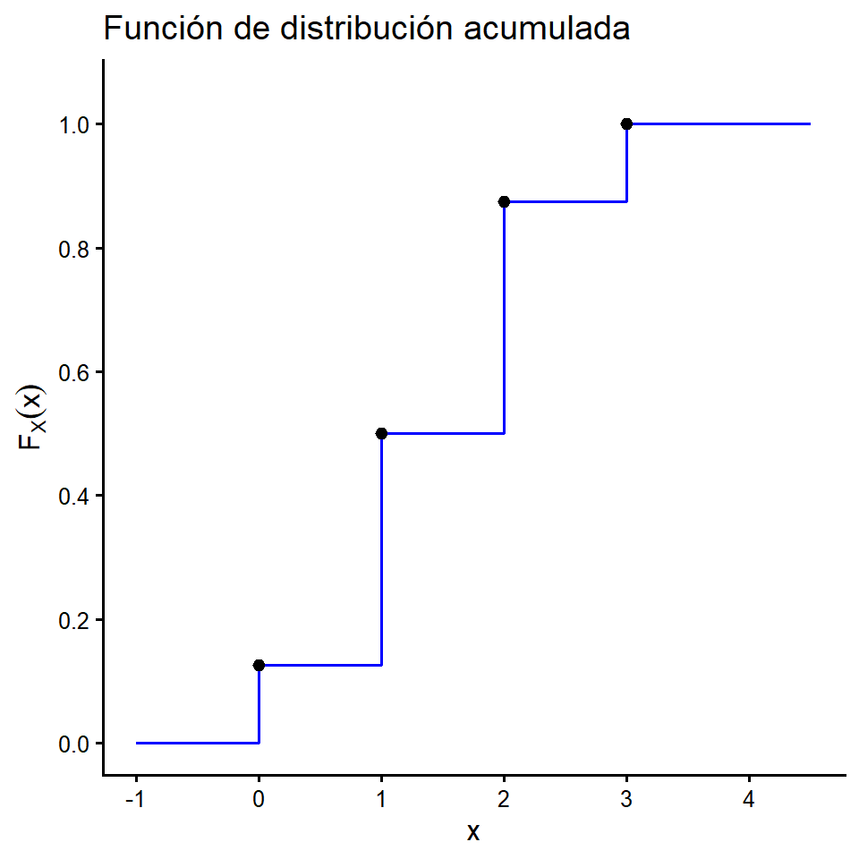
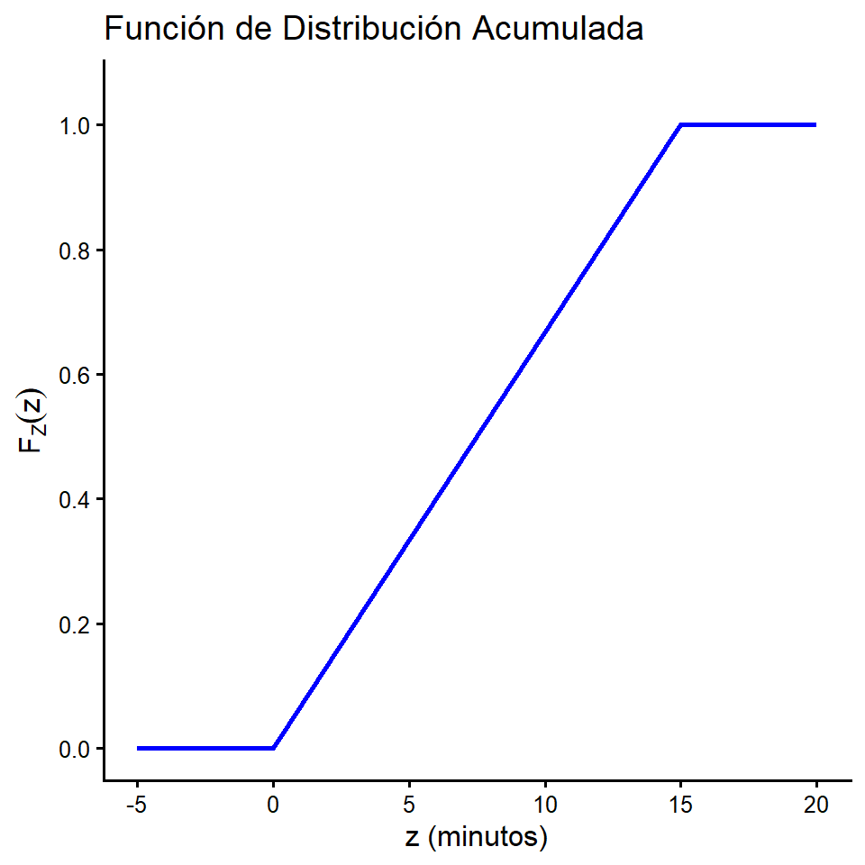

[XS-1130 Principios de Inferencia]
Sea \((\Omega, \mathcal{A}, P),\) un espacio de probabilidad, se define una variable aleatoria \(X\) como una función con dominio \(\Omega\) y codominio al conjunto de \(\mathbb{R}\), es decir,
\[X:\Omega \rightarrow \mathbb{R}\]
Se dice que la variable \(X\) es aleatoria debido a que involucra la probabilidad de los resultado del espacio muestral \(\Omega\), y esta es una función definida sobre dicho espacio muestral, de manera que transforma a todos los posibles resultados de \(\Omega\) en cantidad numéricas.
Por ejemplo suponga que se tienen 4 bolas en una caja (2 Azules, 1 Roja, 1 Verde) y se extraen sin reemplazo 2 bolas de esa caja (sin importar el orden).
Podríamos definir \(X = \text{El número de bolas Azules Extraídas}\).
Ahora bien. Definamos el espacio \(\small \Omega = \{ (Azul_1, Azul_2), (Azul_1, Roja), (Azul_1, Verde), (Roja, Verde), (Azul_2, Roja), (Azul_2, Verde) \}\)
¿Cuáles valores puede tomar \(X\)?
\(x = 0 : \small\{(Roja, Verde)\}\).
\(x = 1 : \small\{(Azul_1, Roja), (Azul_2, Roja), (Azul_1, Verde), (Azul_2, Verde)\}\).
\(x = 2 : \small\{(Azul_1, Azul_2)\}\).
\(x = 3 : \small\emptyset\).
Note como \(X\) es una función de \(\Omega \rightarrow \mathbb{R}\)
Cada valor posible de una variable aleatoria hace una correspondencia con un o una colección de resultados posibles del espacio muestral.
Cada resultado de una variable aleatoria está asociado a mínimo algún evento del espacio muestral.
Note que la variable aleatoria no es una función de probabilidad, pero si es una función.
Ahora bien dada la variable aleatoria y suponiendo que cada resultado presenta la misma probabilidad se puede definir la siguientes probabilidades para los distintos valores de \(X\).
\[\small\underbrace{ \begin{aligned} x = 0 &: \tiny\{(Roja, Verde)\} \\ x = 1 &: \tiny\{(Azul_1, Roja), (Azul_2, Roja), (Azul_1, Verde), (Azul_2, Verde)\} \\ x = 2 &: \tiny\{(Azul_1, Azul_2)\} \\ x = 3 &: \tiny\emptyset \end{aligned} }_{\text{Mapeo de la Variable Aleatoria}} \small \quad \xrightarrow{\quad P(X=x) \quad} \quad \underbrace{ P(X=x) = \begin{cases} \frac{1}{6}, & \text{si } x = 0. \\ \frac{4}{6}, & \text{si } x = 1. \\ \frac{1}{6}, & \text{si } x = 2. \\ 0, & \text{en otro caso}. \end{cases} }_{\text{Función de Probabilidad}}\]
Si el rango de una variable aleatoria \(X\) es numerable, entonces \(X\) es una **variable aleatoria discreta.
** Si el rango de una variable aleatoria \(X\) es un conjunto no numerable (por ejemplo, un intervalo o una unión de intervalos en el conjunto de los números reales \(\mathbb{R}\)), entonces \(X\) es una variable aleatoria continua.
Ejemplos:
Variable Discreta: Seleccionar diez estudiantes de un grupo y aplicarles un examen corto sorpresa).
Sea\(X\): El número de estudiantes que aprueban el examen.
Variable Discreta: Observar una estación de peaje durante un período de una hora)
Sea \(Y\): El número de vehículos que pasan por la estación en ese lapso.
Variable Continua: Llevar un registro de los clientes que llegan a una sucursal bancaria)
Sea \(Z\): El tiempo (en minutos) que esperan los clientes hasta ser atendidos.
Sea \(X\) una variable aleatoria discreta con espacio muestral \(\Omega\) y sea \(P\) una medida de probabilidad sobre \(\Omega\). La función \(f_X: R_X \rightarrow \mathbb{R}\), está definida como:
\[f_X(x) = P(X = x)\] Donde se cumple que \(f_X(x) \ge 0\) y la suma de todas las probabilidades es igual a 1, es decir, \(\sum f_X(x) = 1\).
Sea \(X\) una variable aleatoria continua con espacio muestral \(\Omega\) y sea \(P\) una medida de probabilidad sobre \(\Omega\). La función \(f_X: R_X \rightarrow \mathbb{R}\), está definida como:
Una función tal que la probabilidad de que \(X\) tome un valor en el intervalo \([a, b]\) es el área bajo la curva: \[P(a \le X \le b) = \int_{a}^{b} f_X(x) dx\] Donde se cumple que \(f_X(x) \ge 0\) y el área total bajo la curva es igual a 1, es decir, \(\int_{-\infty}^{\infty} f_X(x) dx = 1\).
(Continuación) Sea \(\small X = \text{El número de bolas Azules Extraídas}\).
\[\small\underbrace{ \begin{aligned} x = 0 &: \tiny\{(Roja, Verde)\} \\ x = 1 &: \tiny\{(Azul_1, Roja), (Azul_2, Roja), (Azul_1, Verde), (Azul_2, Verde)\} \\ x = 2 &: \tiny\{(Azul_1, Azul_2)\} \\ x = 3 &: \tiny\emptyset \end{aligned} }_{\text{Mapeo de la Variable Aleatoria}} \small \quad \xrightarrow{\quad P(X=x) \quad} \quad \underbrace{ P(X=x) = \begin{cases} \frac{1}{6}, & \text{si } x = 0. \\ \frac{4}{6}, & \text{si } x = 1. \\ \frac{1}{6}, & \text{si } x = 2. \\ 0, & \text{en otro caso}. \end{cases} }_{\text{Función de Probabilidad}}\]
(Continuación) Sea \(\small Z = \text{El tiempo (en minutos) que espera un cliente hasta ser atendido}\).
\[\small\underbrace{ \begin{aligned} z < 0 &: \tiny\emptyset \text{ (No existen tiempos negativos)} \\ z \in [0, 5) &: \tiny\{\omega \in \Omega \mid \text{Atención rápida}\} \\ z \in [5, 15] &: \tiny\{\omega \in \Omega \mid \text{Atención normal}\} \\ z > 15 &: \tiny\emptyset \text{ (Todos son atendidos en máximo 15 min)} \end{aligned} }_{\text{Mapeo de la Variable Aleatoria (Intervalos)}} \small \quad \xrightarrow{\quad P(a \le Z \le b) = \int_{a}^{b} f_Z(z) dz \quad} \quad \underbrace{ f_Z(z) = \begin{cases} \frac{1}{15}, & \text{si } 0 \le z \le 15. \\ 0, & \text{en otro caso}. \end{cases} }_{\text{Función de Densidad de Probabilidad}}\]
Si se tienen dos eventos disjuntos \(X=a\) y \(X=b\), entonces:
\[\small P(X=a \cup X=b)= P(X=a) + P(X=b)\]
Calcule la probabilidad de tener 1 o 2 bolas azules:
\(\small P(X=1 \cup X=2)= P(X=1) + P(X=2) = \frac{4}{6}+ \frac{1}{6} = \frac{5}{6} = 0.8333\)
¿Calcule la probabilidad de tener 1 o ninguna bola azul?
\[\small P(X=x) = \begin{cases}\frac{1}{6}, & \text{si } x = 0. \\\frac{4}{6}, & \text{si } x = 1. \\\frac{1}{6}, & \text{si } x = 2. \\0, & \text{en otro caso}.\end{cases} \]
También, es importante definir el evento \(X \leq a\) de modo que:
\(\small P(X\leq a)= P(X < a \cup X=a) = P(X<a) + P(X=a)\)
Calcule la probabilidad de tener a lo sumo 2 bolas azules:
\(\small P(X \leq 2)= P(X=0) + P(X=1) + P(X=2) = \frac{1}{6} + \frac{4}{6}+ \frac{1}{6} = 1\)
¿Calcule la probabilidad de tener más de una bola azul?
Considere el experimento que consiste en lanzar tres veces una moneda equilibrada al aire. Se define la variable aleatoria \(X\): número de escudos obtenidos, entonces, el espacio muestral es
\(\Omega = \{CCC, CCE, CEC, ECC, EEC, ECE, CEE, EEE\}\) y \(X\) puede asumir los valores 0,1,2 y 3. Estos valores se asocian con probabilidades de la siguiente manera:
\(P(X=0) = P(\{C,C,C\}) = \tfrac{1}{8}\)
\(P(X=1) = P(\{C,C,E\} \cup \{C,E,C\} \cup \{E,C,C\}) = \tfrac{1}{8} + \tfrac{1}{8} + \tfrac{1}{8} = \tfrac{3}{8}\)
\(P(X=2) = P(\{E,E,C\} \cup \{E,C,E\} \cup \{C,E,E\})= \tfrac{1}{8} + \tfrac{1}{8} + \tfrac{1}{8} = \tfrac{3}{8}\)
\(P(X=3) = P(\{E,E,E\}) = \tfrac{1}{8}\)
Por ende la función de probabilidad es:
\[P(X=x) =\begin{cases}\frac{1}{8}, & \text{si } x = 0. \\ \frac{3}{8}, & \text{si } x = 1. \\ \frac{3}{8}, & \text{si } x = 2.\\ \frac{1}{8}, & \text{si } x = 3. \\ 0, & \text{en otro caso }. \end{cases}\]

Considere el experimento que consiste en llevar un registro de los clientes que llegan a una sucursal bancaria. Se define la variable aleatoria \(Z\): el tiempo (en minutos) que esperan los clientes hasta ser atendidos. Asumiendo una distribución uniforme donde el tiempo máximo de espera es de 15 minutos, el espacio muestral es \(\Omega = [0, 15]\) y \(Z\) puede asumir cualquier valor real continuo dentro de este intervalo.
A diferencia del caso discreto, estos valores se agrupan en intervalos y se asocian con probabilidades mediante la integral de su función de densidad (\(f_Z(z) = \frac{1}{15}\)) de la siguiente manera:
\(P(Z = z) = P(\{\omega \in \Omega \mid \text{Tiempo exacto}\}) = 0\) (para cualquier valor exacto \(z\))
\(P(0 \le Z < 5) = P(\{\omega \in \Omega \mid \text{Atención rápida}\}) = \int_{0}^{5} \frac{1}{15} dz = \frac{5}{15} = \frac{1}{3}\)
\(P(5 \le Z \le 15) = P(\{\omega \in \Omega \mid \text{Atención normal}\}) = \int_{5}^{15} \frac{1}{15} dz = \frac{10}{15} = \frac{2}{3}\)
Por ende la función de densidad de probabilidad es:
\[f_Z(z) =\begin{cases}\frac{1}{15}, & \text{si } 0 \le z \le 15. \\ 0, & \text{en otro caso }. \end{cases}\]

El caso de ir acumulando las probabilidades, ya hemos estudiado cuando determinamos la probabilidad de ocurrencia de los eventos del tipo \(\{X\leq x\}\). La función de distribución acumulada de probabilidad se define de la siguiente forma:
Definición: Sea \(X\) una variable aleatoria con función de probabilidad \(f_X\). A la función definida en \(f_X: R_X \rightarrow \mathbb{R}\), dada por:
\[\text{(caso discreto):} \qquad F_X(x) = P(X \leq x) = \sum_{k \in R_X, \; k \leq x} P(X = k)\]
\[\text{(caso continuo):} \qquad F_X(x) = P(X \leq x) = \int_{- \infty}^{x} f_X(t)dt\]
Se le llama función de distribución acumulada de \(X\)
Continuando con el experimento anterior. La función de distribución acumulada de \(X\) se da por trozos:
Si \(x < 0\), entonces \(\small F_X(x) = 0\).
Si \(0 \leq x < 1\), entonces \(\small F_X(x) = f_X(0) = \tfrac{1}{8}\).
Si \(1 \leq x < 2\), entonces \(\small F_X(x) = f_X(0) + f_X(1) = \tfrac{1}{8} + \tfrac{3}{8} = \tfrac{1}{2}\)
Si \(2 \leq x < 3\), entonces \(\small F_X(x) = f_X(0) + f_X(1) + f_X(2) = \tfrac{1}{8} + \tfrac{3}{8} + \tfrac{3}{8} = \tfrac{7}{8}\).
Si \(x \geq 3\), entonces \(\small F_X(x) = f_X(0) + f_X(1) + f_X(2) + f_X(3) = \tfrac{1}{8} + \tfrac{3}{8} + \tfrac{3}{8} + \tfrac{1}{8} = 1\)
\[\small F_X(x) = P(X\leq x) = \begin{cases} 0, & \text{si } x < 0 \\ \frac{1}{8}, & \text{si } 0 \leq x < 1 \\ \frac{1}{2}, & \text{si } 1 \leq x < 2 \\ \frac{7}{8}, & \text{si } 2 \leq x < 3 \\ 1, & \text{si } x \geq 3 \end{cases}\]

Continuando con el experimento de la sucursal bancaria. La función de distribución acumulada de \(Z\) (tiempo de espera) se obtiene integrando su función de densidad y se da por trozos:
Si \(z < 0\), entonces \(\small F_Z(z) = \int_{-\infty}^{z} 0 \, dt = 0\).
Si \(0 \le z \le 15\), entonces \(\small F_Z(z) = \int_{0}^{z} \frac{1}{15} dt = \frac{z}{15}\).
Si \(z > 15\), entonces \(\small F_Z(z) = \int_{0}^{15} \frac{1}{15} dt + \int_{15}^{z} 0 \, dt = 1 + 0 = 1\).
\[\small F_Z(z) = P(Z \leq z) = \int_{-\infty}^{z} f_Z(t) dt = \begin{cases} 0, & \text{si } z < 0 \\ \frac{z}{15}, & \text{si } 0 \le z \le 15 \\ 1, & \text{si } z > 15 \end{cases}\]

Sea \(X\) una variable aleatoria discreta con función de distribución acumulada de probabilidad \(F_X\).
Entonces, esta función cumple con las siguientes propiedades:
\(F_X(x) \geq 0, \ \forall x \in \mathbb{R}.\)
Si \(x \leq y\), entonces \(F_X(x) \leq F_X(y)\) (es creciente).
\(P(X > x) = 1 - F_X(x), \ \forall x \in \mathbb{R}.\)
\(P(a < X \leq b) = F_X(b) - F_X(a) \quad \text{para cualesquiera } a \text{ y } b \text{ reales tales que } a < b.\)
\(\lim_{x \to -\infty} F_X(x) = 0 \quad \text{y} \quad \lim_{x \to +\infty} F_X(x) = 1.\)
Se sabe que de un grupo de cuatro componentes electrónicos dos son defectuosos. Un inspector prueba los componentes uno por uno hasta encontrar los dos componentes en mal estado, tome en cuenta que una vez que el inspector encuentre el segundo componente defectuoso las pruebas concluyen.
Sea \(X\) el número de pruebas realizadas hasta encontrar el segundo componente defectuoso. Establezca una distribución de probabilidad y distribución acumulada para la variable \(X\).
\(X: \Omega= \{(1,1) , (0,1,1) , (1,0,1) , (0,0,1,1) , (0,1,0,1) , (1,0,0,1)\}\)
\(X: \{2,3,4\}\)
\[\small f_X(x) =\begin{cases}\frac{1}{6}, & \text{si } x = 2. \\ \frac{1}{3}, & \text{si } x = 3. \\ \frac{1}{2}, & \text{si } x = 4. \\ 0, & \text{en otro caso }. \end{cases}\]
\[\small F_X(x) = \begin{cases} 0, & \text{si } x < 2 \\ \frac{1}{6}, & \text{si } 2 \leq x < 3 \\ \frac{1}{2}, & \text{si } 3 \leq x < 4 \\ 1, & \text{si } x \geq 4 \end{cases}\]
Sea \(X\) una variable aleatoria discreta con función de probabilidad \(f_X\), entonces se define la esperanza o valor esperado de \(X\) por:
\[\small \text{(caso discreto):} \qquad E(X) = \sum_{x_i \in R_X} x_i P(X = x_i)\]
\[\small \text{(caso continuo):} \qquad E(X) = \int_{-\infty}^{\infty} x \cdot f_X(x) dx\]
Siempre que exista.
En general si \(g(X)\) es una transformación de \(X\), entonces:
\[\small \underbrace{E[g(X)] = \sum_{x_i \in R_X} g(x_i) f_X(x_i)}_{\text{Caso discreto}} \quad \text{ó} \quad \underbrace{E[g(X)] = \int_{-\infty}^{\infty} g(x) f_X(x) dx}_{\text{Caso continuo}}\]
Siempre que exista.
Considere el experimento que consiste en lanzar tres veces una moneda equilibrada al aire.
Se define la variable aleatoria \(X\): número de escudos obtenidos.
Entonces, la función de probabilidad para esta variable aleatoria discreta es:
\[ \small P(X = x) = \begin{cases} \frac{1}{8}, & \text{si } x = 0 \\ \frac{3}{8}, & \text{si } x = 1 \\ \frac{3}{8}, & \text{si } x = 2 \\ \frac{1}{8}, & \text{si } x = 3 \end{cases}\]
El valor esperado o esperanza de \(X\) está determinado por:
\[\small E(X) = \sum_{x_i \in R_X} x_i f_X(x_i) = 0 \cdot \tfrac{1}{8} + 1 \cdot \tfrac{3}{8} + 2 \cdot \tfrac{3}{8} + 3 \cdot \tfrac{1}{8} = \tfrac{3}{2}\]
Del resultado anterior se concluye que el valor promedio o esperado de escudos, al lanzar tres veces una moneda, es: \(\frac{3}{2}\)
También, si se desea determinar \(E(X^2)\) se procede de la siguiente forma:
\[E(X^2) = 0^2 \cdot \tfrac{1}{8} + 1^2 \cdot \tfrac{3}{8} + 2^2 \cdot \tfrac{3}{8} + 3^2 \cdot \tfrac{1}{8} = 3\]
El \(3\) obtenido anteriormente es el valor esperado de la variable aleatoria \(X^2\);
esta variable se utilizará más adelante para determinar la varianza.
Note que aquí estamos usando la anterior definición:
\[E[g(X)] = \sum_{x_i \in R_X} g(x_i) f_X(x_i)\]
Considere el experimento que consiste en llevar un registro de los clientes que llegan a una sucursal bancaria. Se define la variable aleatoria \(X\): el tiempo (en minutos) que esperan los clientes hasta ser atendidos. Asumiendo una distribución uniforme donde el tiempo máximo de espera es de 15 minutos, el espacio muestral es \(\Omega = [0, 15]\) y \(X\) puede asumir cualquier valor real continuo dentro de este intervalo.
Entonces, la función de probabilidad para esta variable aleatoria continua es:
\[f_X(x) =\begin{cases}\frac{1}{15}, & \text{si } 0 \le x \le 15. \\ 0, & \text{en otro caso }. \end{cases}\]
El valor esperado o esperanza de \(X\) está determinado por:
\[E(X) = \int_{-\infty}^{\infty} x \cdot f_X(x) dx = \int_{0}^{15} x \cdot \frac{1}{15} dx = \frac{x^2}{2\cdot15} \Big|_{x=0}^{x=15} = \frac{15^2}{30} = 7.5\]
Sea \(X\) una variable aleatoria discreta con función de probabilidad \(f_X\) y valor esperado \(E(X) = \mu_X\), se define la varianza o variancia de \(X\) por:
\[\small \text{(caso discreto):} \operatorname{Var}(X) = \sum_{x_i \in R_X} (x_i - \mu_X)^2 f_X(x_i) \]
\[\small \text{(caso continuo):} \operatorname{Var}(X) = \int_{-\infty}^{\infty} (x - \mu_X)^2 f_X \ dx\]
Usualmente, se denota por: \(Var(X)\), \(\sigma_X^2\).
Sea \(X\) una variable aleatoria discreta para la cual existen los valores esperados \(E(X)\) y \(E(X^2)\), entonces:
\[Var(X) = E(X^2) - \big(E(X)\big)^2\]
Ejemplo:
Sea \(X\) una variable aleatoria, con la siguiente función de densidad:
\[f_X(x) = \begin{cases} \dfrac{1}{6}, & x \in \{1,2,\ldots,6\} \\ 0, & \text{en otro caso} \end{cases}\]
La varianza o variancia de \(X\) está determinada, por:
\(E(X) = 1 \cdot \tfrac{1}{6} + 2 \cdot \tfrac{1}{6} + 3 \cdot \tfrac{1}{6} + 4 \cdot \tfrac{1}{6} + 5 \cdot \tfrac{1}{6} + 6 \cdot \tfrac{1}{6} = \tfrac{7}{2}\)
\(E(X^2) = 1^2 \cdot \tfrac{1}{6} + 2^2 \cdot \tfrac{1}{6} + 3^2 \cdot \tfrac{1}{6} + 4^2 \cdot \tfrac{1}{6} + 5^2 \cdot \tfrac{1}{6} + 6^2 \cdot \tfrac{1}{6} = \tfrac{91}{6}\)
\(Var(X) = E(X^2) - \big(E(X)\big)^2 = \tfrac{91}{6} - \left(\tfrac{7}{2}\right)^2 = \tfrac{35}{12}\)
Del resultado anterior, los datos varían en promedio \(\tfrac{35}{12}\) alrededor del valor esperado.
Sea \(X\) una variable aleatoria discreta, se define la desviación estándar o típica de \(X\) por:
\[\sigma_X = \sqrt{\operatorname{Var}(X)}\]
Ejemplo
En el ejemplo anterior, se determinó la varianza de una variable aleatoria \(X\), la cual es:
\[\operatorname{Var}(X) = \tfrac{35}{12} \;\;\Rightarrow\;\; \sigma_X = \sqrt{\tfrac{35}{12}}\]
Propiedades de la Esperanza Matemática
Sean \(X\) e \(Y\) dos variables aleatorias y sea \(c\) una constante, entonces:
Propiedades de la Varianza
Sean \(X\) e \(Y\) dos variables aleatorias y sea \(c\) una constante, entonces:
Ejercicio 1: Considere el experimento de lanzar dos dados de seis caras al aire y sea \(X\) la suma de ambos resultados.
Encuentre la función de probabilidad \(f_X\), la función de distribución acumulada \(F_X\), el valor esperado \(E(X)\) y la varianza \(Var(X)\).
Ejercicio 2*: Se selecciona una muestra aleatoria de 3 personas del padrón de votantes de la última elección. Sea \(X\) el número de personas que votaron por el Partido A. Suponga que la probabilidad de que una persona del padrón vote por el Partido A es de 0,40, y que la selección de los tres votantes representa pruebas completamente independientes.
Encuentre la función de probabilidad \(f_X\), la función de distribución acumulada \(F_X\), el valor esperado \(E(X)\) y la varianza \(Var(X)\).
Ejercicio 3: El tiempo \(X\) (en minutos) que un estudiante espera el autobús de la universidad varía de forma completamente aleatoria y uniforme entre 0 y 10 minutos.
Sabiendo que la probabilidad se reparte de manera constante a lo largo de este intervalo: Defina formalmente la función de densidad \(f_X\), y encuentre la función de distribución acumulada \(F_X\), el tiempo esperado de espera \(E(X)\) y la varianza \(Var(X)\).
Ejercicio 4*: El tiempo \(X\) (en horas) que tarda en completarse una actualización crítica en los servidores de un hospital tiene una función de densidad dada por \(f_X(x) = \frac{x}{2}\) siempre que el valor de \(x\) esté entre 0 y 2 horas (y es 0 en cualquier otro caso).
Plantee la función de densidad \(f_X\), y encuentre la función de distribución acumulada \(F_X\), el tiempo de actualización esperado \(E(X)\) y la varianza \(Var(X)\).
Teoría
a- El traductor de ingeniería - Variables Aleatorias: Explicación para todos!
b- Matemóvil - Variables aleatorias discretas y continuas | Ejemplos
c- Roberto Kleiner - Variable aleatoria - Esperanza y Varianza
Resolución de Problemas (Ejemplos Prácticos)
Caso Discreto
1- Matemóvil - Función de probabilidad | Intro
2- Matemóvil - Función de probabilidad | Ejercicio
3- Matemóvil - Función de distribución acumulativa | Intro |
4- Matemóvil - Función de distribución acumulativa | Ejercicio |
Caso Continuo
5- Matemóvil - Función de densidad de probabilidad| Intro y Ejercicio |
6- Matemóvil - Función de distribución acumulativa| Intro y Ejercicio |